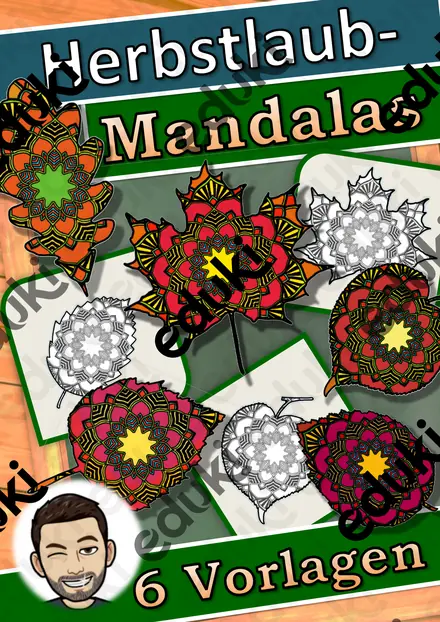

Teströhrchenhalter - Coronatest
Mit dieser Teströhrchenhalter-Material zum Falten von Teströhrchenhalter für eure Schüler erhalten Sie einen Bogen mit jeweils 4 Teströhrchenhalter-Vorlagen. Die Vorlage muss ausgeschnitten, an den gestrichelten Linien gefaltet und an den grauen Stellen geklebt werden. Auch auf Standardpapier kopiert und gebastelt, ist sie sehr stabil und kann viele Male genutzt werden. Die Ausschnitte für die Teströhrchen sind in der Größe - je nach Test- variabel. 😊Liebe Grüße.
FachFachübergreifendes
KlasseKl. 4–9
SchulformFörderunterricht
MaterialartMal- und Bastelvorlagen
Ähnliche Materialien

Ausmalbild - Mein Lieblingseis (Sommerferien) - Eis zum Ausmalen

Das bin ich, Steckbrief - Das bin Ich - Schulanfang

Einmaleins Materialpaket Spiele (auch Homeschooling) (kleines Einmaleins)

Reflexion: Lernbarometer, Stimmungsbarometer

Valentinstag Weitermalbilder

Steckbrief Droge Heroin – Drogenprävention

Kalenderpuzzle - 365 Rätsel - Tafelmaterial - Konzentrationsübung - Datum für Tafel
